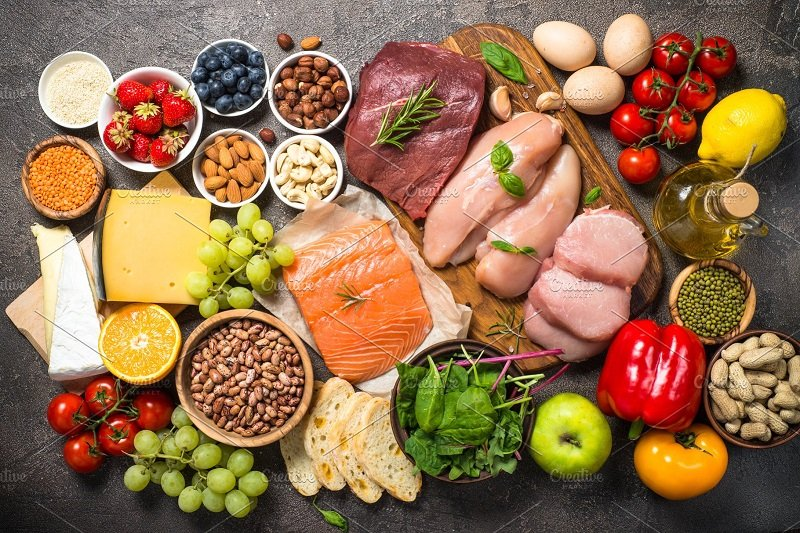

Thực phẩm giúp giảm béo
1. Hạt chia

Hạt chia là một trong những thực phẩm giảm cân “thần thánh”. Món ăn này rất giàu axit béo omega – 3 và omega – 6, cũng như protein, chất xơ… rất có lợi cho quá trình tiêu hóa và thúc đẩy đốt cháy lượng chất béo dư thừa ra khỏi cơ thể. Khi tiếp xúc với nước, hạt chia sẽ nở ra và gia tăng kích thước khi vào dạ dày, với 1gr hạt chia có thể hấp thu được 25ml chất lỏng, bởi thế mà chỉ cần 1 muỗng cà phê hạt chia pha cùng 1 ly nước thì bạn đã có thể hạn chế cơn đói trong thời gian dài.Ngoài ra, khi sử dụng hạt chia để giảm cân còn tạo thành một lớp chất nhầy bên thành dạ dày, làm cho sự hấp thụ carbohydrate giảm đi đáng kể. Bạn có thể uống hạt chia cùng với nước, sinh tố hay ăn cùng sữa chua